The remix challenge’s style test: one test picture per style from each of the six characters’ published base (their current default look, its front view), on each of the four challenge models. 15 styles × 6 characters × 4 models; 357 pictures made, 3 not made (listed at the end).
Every picture was made with an empty change box: the prompt is only the line that keeps the character, the style, the keep-the-character line and the site’s no-words line. Same seed (20261108) for the two open models; the closed models take none. Pictures are 1024 × 576; GPT Image 2.5 makes 1536 × 1024 (3:2), cropped to 16:9 with most of the removed height taken from the bottom so heads are kept (owner’s decision). Gemini’s 16:9 picture (1376 × 768) is scaled to fit and padded with its own corner colour, as the site does. Qwen-Image-Edit returned 1376 × 768 although 1024 × 576 was asked for; it is shown as returned, scaled down.
Each prompt went through the site’s prompt check first. At the challenge route’s token budget (400, the default) 62 of the 90 prompts got no answer and would have been refused; asked again at 1,200 tokens, as Remix and sheet views use, all 90 were allowed. Both runs are in the ledger.
These are the project’s own test pictures: not published, nothing stored on the site. Drafted by the coding agent (Claude, a closed model by Anthropic). DRAFT until the owner approves it.
$16.44spent of the $25 cap
$0.51FLUX.2 [klein] 4B
$5.52Qwen-Image-Edit 2509
$4.31GPT Image 2.5
$6.09Gemini 3.1 Flash Image
$0.02prompt checks
The prompt, for Zei in the first style
Zei is the person in reference image 1, the main figure, in the foreground: keep their face, hair and clothes exactly as in reference image 1.
Style: 2D anime, clean line art, flat cel shading with one shadow tone, large expressive eyes, simple painted background
Keep the same character: face, hair, build and clothes, unless the change says otherwise.
No text, no lettering, no signs with words.
The six bases
ZeiGladias
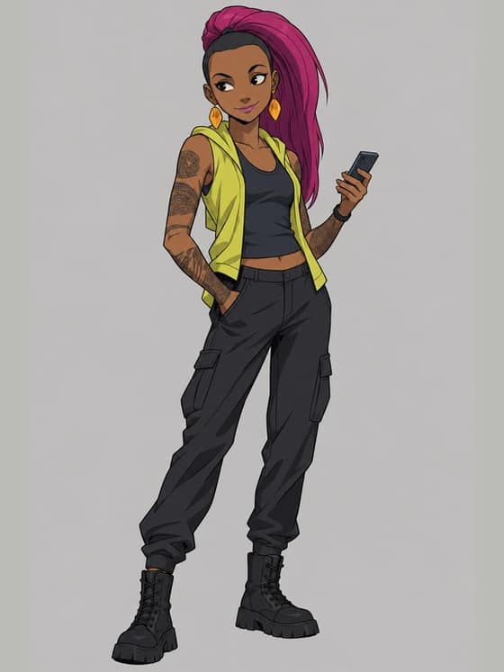
BaiSeilaDeluinMu
1Anime
new preset (owner-approved list, 2026-11-08)
Style text2D anime, clean line art, flat cel shading with one shadow tone, large expressive eyes, simple painted background
Zei
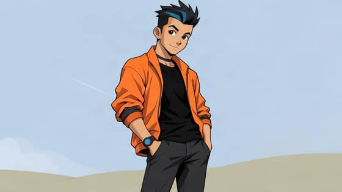
Anime · Zei 1FLUX.2 [klein] 4B · open weights, by Black Forest Labs
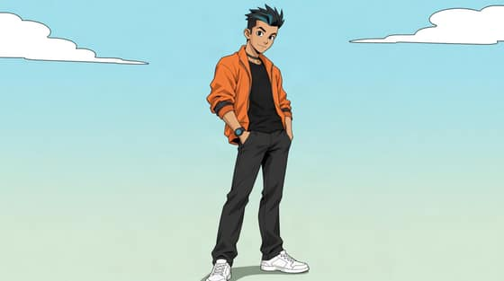
Anime · Zei 2Qwen-Image-Edit 2509 · open weights, by Alibaba’s Qwen team
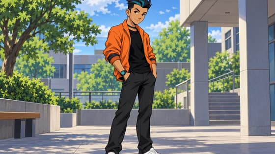
Anime · Zei 3GPT Image 2.5 · a closed model by OpenAI
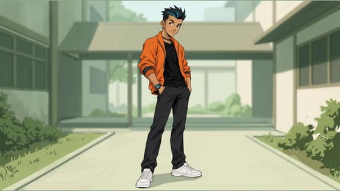
Anime · Zei 4Gemini 3.1 Flash Image · a closed model by Google
Gladias
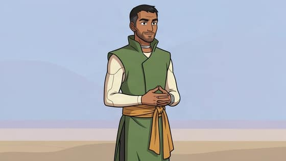
Anime · Gladias 1FLUX.2 [klein] 4B · open weights, by Black Forest Labs
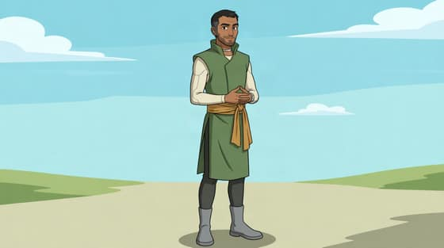
Anime · Gladias 2Qwen-Image-Edit 2509 · open weights, by Alibaba’s Qwen team
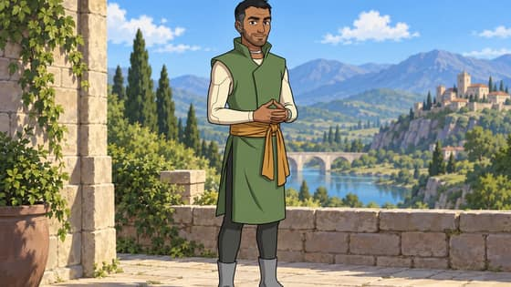
Anime · Gladias 3GPT Image 2.5 · a closed model by OpenAI
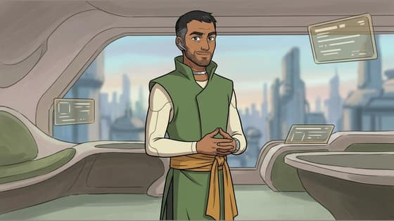
Anime · Gladias 4Gemini 3.1 Flash Image · a closed model by Google
Bai
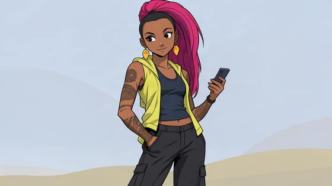
Anime · Bai 1FLUX.2 [klein] 4B · open weights, by Black Forest Labs
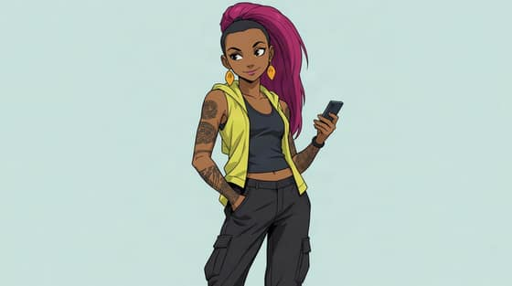
Anime · Bai 2Qwen-Image-Edit 2509 · open weights, by Alibaba’s Qwen team
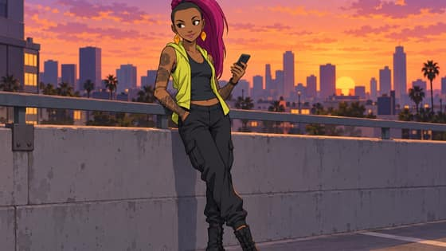
Anime · Bai 3GPT Image 2.5 · a closed model by OpenAI
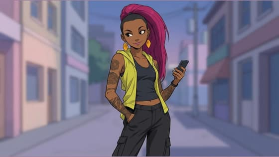
Anime · Bai 4Gemini 3.1 Flash Image · a closed model by Google
Seila
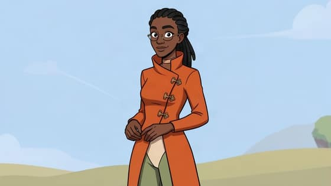
Anime · Seila 1FLUX.2 [klein] 4B · open weights, by Black Forest Labs
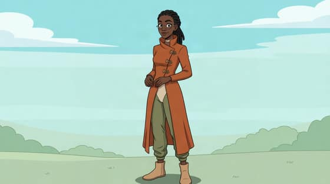
Anime · Seila 2Qwen-Image-Edit 2509 · open weights, by Alibaba’s Qwen team
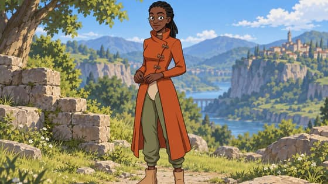
Anime · Seila 3GPT Image 2.5 · a closed model by OpenAI
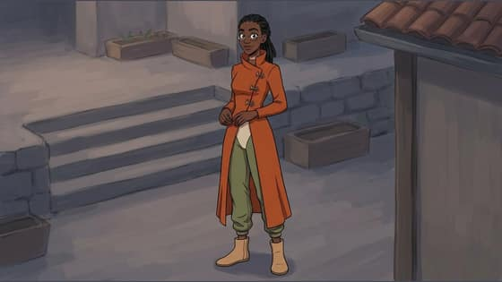
Anime · Seila 4Gemini 3.1 Flash Image · a closed model by Google
Deluin
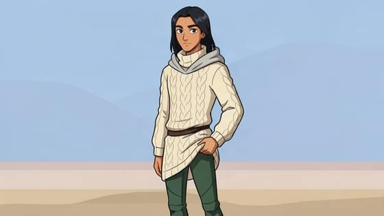
Anime · Deluin 1FLUX.2 [klein] 4B · open weights, by Black Forest Labs
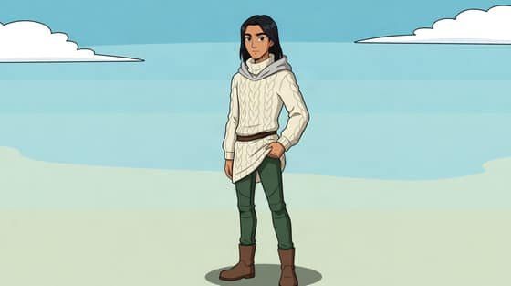
Anime · Deluin 2Qwen-Image-Edit 2509 · open weights, by Alibaba’s Qwen team
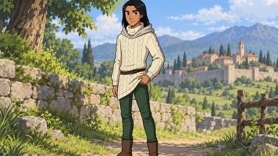
Anime · Deluin 3GPT Image 2.5 · a closed model by OpenAI
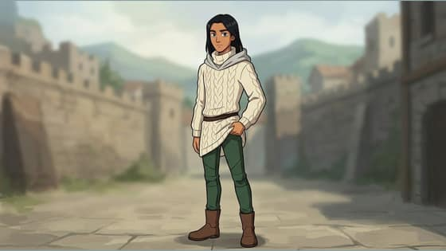
Anime · Deluin 4Gemini 3.1 Flash Image · a closed model by Google
Mu
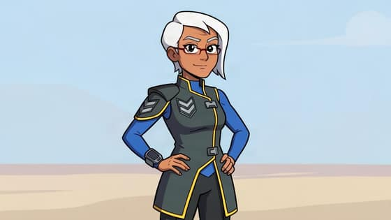
Anime · Mu 1FLUX.2 [klein] 4B · open weights, by Black Forest Labs
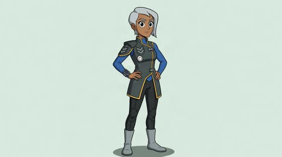
Anime · Mu 2Qwen-Image-Edit 2509 · open weights, by Alibaba’s Qwen teamAnime · Mu 3GPT Image 2.5 · a closed model by OpenAIAnime · Mu 4Gemini 3.1 Flash Image · a closed model by Google
Comic book · Zei 1FLUX.2 [klein] 4B · open weights, by Black Forest Labs
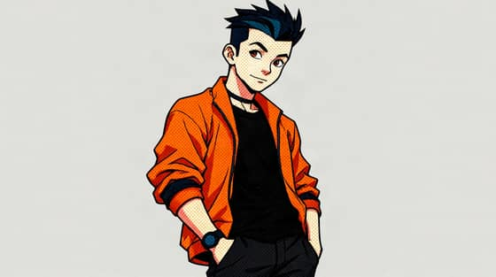
Comic book · Zei 2Qwen-Image-Edit 2509 · open weights, by Alibaba’s Qwen team
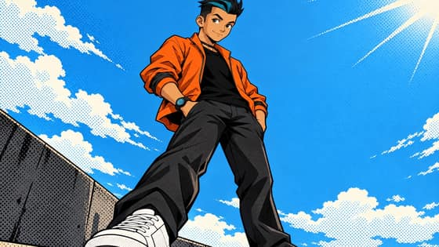
Comic book · Zei 3GPT Image 2.5 · a closed model by OpenAI
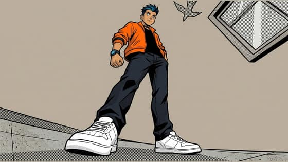
Comic book · Zei 4Gemini 3.1 Flash Image · a closed model by Google
Gladias
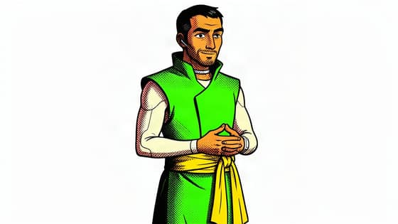
Comic book · Gladias 1FLUX.2 [klein] 4B · open weights, by Black Forest Labs
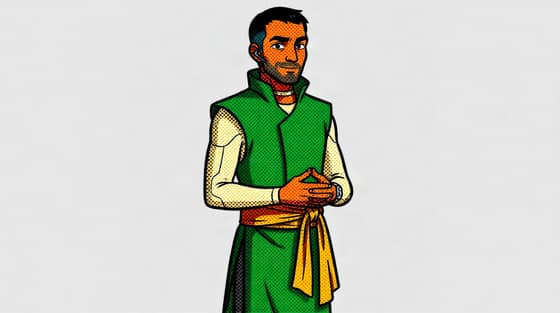
Comic book · Gladias 2Qwen-Image-Edit 2509 · open weights, by Alibaba’s Qwen teamComic book · Gladias 3GPT Image 2.5 · a closed model by OpenAIComic book · Gladias 4Gemini 3.1 Flash Image · a closed model by Google
Bai
Comic book · Bai 1FLUX.2 [klein] 4B · open weights, by Black Forest LabsComic book · Bai 2Qwen-Image-Edit 2509 · open weights, by Alibaba’s Qwen teamComic book · Bai 3GPT Image 2.5 · a closed model by OpenAIComic book · Bai 4Gemini 3.1 Flash Image · a closed model by Google
Seila
Comic book · Seila 1FLUX.2 [klein] 4B · open weights, by Black Forest LabsComic book · Seila 2Qwen-Image-Edit 2509 · open weights, by Alibaba’s Qwen teamComic book · Seila 3GPT Image 2.5 · a closed model by OpenAIComic book · Seila 4Gemini 3.1 Flash Image · a closed model by Google
Deluin
Comic book · Deluin 1FLUX.2 [klein] 4B · open weights, by Black Forest LabsComic book · Deluin 2Qwen-Image-Edit 2509 · open weights, by Alibaba’s Qwen teamComic book · Deluin 3GPT Image 2.5 · a closed model by OpenAIComic book · Deluin 4Gemini 3.1 Flash Image · a closed model by Google
Mu
Comic book · Mu 1FLUX.2 [klein] 4B · open weights, by Black Forest LabsComic book · Mu 2Qwen-Image-Edit 2509 · open weights, by Alibaba’s Qwen teamComic book · Mu 3GPT Image 2.5 · a closed model by OpenAIComic book · Mu 4Gemini 3.1 Flash Image · a closed model by Google
Style text3D forms drawn over with hand-inked lines, halftone dots and hatching in the shadows, slightly offset colour printing, bold graphic colour
Zei
Comic 3D mix · Zei 1FLUX.2 [klein] 4B · open weights, by Black Forest LabsComic 3D mix · Zei 2Qwen-Image-Edit 2509 · open weights, by Alibaba’s Qwen teamComic 3D mix · Zei 3GPT Image 2.5 · a closed model by OpenAIComic 3D mix · Zei 4Gemini 3.1 Flash Image · a closed model by Google
Gladias
Comic 3D mix · Gladias 1FLUX.2 [klein] 4B · open weights, by Black Forest LabsComic 3D mix · Gladias 2Qwen-Image-Edit 2509 · open weights, by Alibaba’s Qwen teamComic 3D mix · Gladias 3GPT Image 2.5 · a closed model by OpenAIComic 3D mix · Gladias 4Gemini 3.1 Flash Image · a closed model by Google
Bai
Comic 3D mix · Bai 1FLUX.2 [klein] 4B · open weights, by Black Forest LabsComic 3D mix · Bai 2Qwen-Image-Edit 2509 · open weights, by Alibaba’s Qwen teamComic 3D mix · Bai 3GPT Image 2.5 · a closed model by OpenAIComic 3D mix · Bai 4Gemini 3.1 Flash Image · a closed model by Google
Seila
Comic 3D mix · Seila 1FLUX.2 [klein] 4B · open weights, by Black Forest LabsComic 3D mix · Seila 2Qwen-Image-Edit 2509 · open weights, by Alibaba’s Qwen teamComic 3D mix · Seila 3GPT Image 2.5 · a closed model by OpenAIComic 3D mix · Seila 4Gemini 3.1 Flash Image · a closed model by Google
Deluin
Comic 3D mix · Deluin 1FLUX.2 [klein] 4B · open weights, by Black Forest LabsComic 3D mix · Deluin 2Qwen-Image-Edit 2509 · open weights, by Alibaba’s Qwen teamComic 3D mix · Deluin 3GPT Image 2.5 · a closed model by OpenAIComic 3D mix · Deluin 4Gemini 3.1 Flash Image · a closed model by Google
Mu
Comic 3D mix · Mu 1FLUX.2 [klein] 4B · open weights, by Black Forest LabsComic 3D mix · Mu 2Qwen-Image-Edit 2509 · open weights, by Alibaba’s Qwen teamComic 3D mix · Mu 3GPT Image 2.5 · a closed model by OpenAIComic 3D mix · Mu 4Gemini 3.1 Flash Image · a closed model by Google
Style textstop-motion clay, visible fingerprints and tool marks, soft studio light, miniature set
Zei
Claymation · Zei 1FLUX.2 [klein] 4B · open weights, by Black Forest LabsClaymation · Zei 2Qwen-Image-Edit 2509 · open weights, by Alibaba’s Qwen teamClaymation · Zei 3GPT Image 2.5 · a closed model by OpenAIClaymation · Zei 4Gemini 3.1 Flash Image · a closed model by Google
Gladias
Claymation · Gladias 1FLUX.2 [klein] 4B · open weights, by Black Forest LabsClaymation · Gladias 2Qwen-Image-Edit 2509 · open weights, by Alibaba’s Qwen teamClaymation · Gladias 3GPT Image 2.5 · a closed model by OpenAIClaymation · Gladias 4Gemini 3.1 Flash Image · a closed model by Google
Bai
Claymation · Bai 1FLUX.2 [klein] 4B · open weights, by Black Forest LabsClaymation · Bai 2Qwen-Image-Edit 2509 · open weights, by Alibaba’s Qwen teamClaymation · Bai 3GPT Image 2.5 · a closed model by OpenAIClaymation · Bai 4Gemini 3.1 Flash Image · a closed model by Google
Seila
Claymation · Seila 1FLUX.2 [klein] 4B · open weights, by Black Forest LabsClaymation · Seila 2Qwen-Image-Edit 2509 · open weights, by Alibaba’s Qwen teamClaymation · Seila 3GPT Image 2.5 · a closed model by OpenAIClaymation · Seila 4Gemini 3.1 Flash Image · a closed model by Google
Deluin
Claymation · Deluin 1FLUX.2 [klein] 4B · open weights, by Black Forest LabsClaymation · Deluin 2Qwen-Image-Edit 2509 · open weights, by Alibaba’s Qwen teamClaymation · Deluin 3GPT Image 2.5 · a closed model by OpenAIClaymation · Deluin 4Gemini 3.1 Flash Image · a closed model by Google
Mu
Claymation · Mu 1FLUX.2 [klein] 4B · open weights, by Black Forest LabsClaymation · Mu 2Qwen-Image-Edit 2509 · open weights, by Alibaba’s Qwen teamClaymation · Mu 3GPT Image 2.5 · a closed model by OpenAIClaymation · Mu 4Gemini 3.1 Flash Image · a closed model by Google
Style textloose watercolour washes over pencil, paper texture, soft pastel palette
Zei
Storybook · Zei 1FLUX.2 [klein] 4B · open weights, by Black Forest LabsStorybook · Zei 2Qwen-Image-Edit 2509 · open weights, by Alibaba’s Qwen teamStorybook · Zei 3GPT Image 2.5 · a closed model by OpenAIStorybook · Zei 4Gemini 3.1 Flash Image · a closed model by Google
Gladias
Storybook · Gladias 1FLUX.2 [klein] 4B · open weights, by Black Forest LabsStorybook · Gladias 2Qwen-Image-Edit 2509 · open weights, by Alibaba’s Qwen teamStorybook · Gladias 3GPT Image 2.5 · a closed model by OpenAIStorybook · Gladias 4Gemini 3.1 Flash Image · a closed model by Google
Bai
Storybook · Bai 1FLUX.2 [klein] 4B · open weights, by Black Forest LabsStorybook · Bai 2Qwen-Image-Edit 2509 · open weights, by Alibaba’s Qwen teamStorybook · Bai 3GPT Image 2.5 · a closed model by OpenAIStorybook · Bai 4Gemini 3.1 Flash Image · a closed model by Google
Seila
Storybook · Seila 1FLUX.2 [klein] 4B · open weights, by Black Forest LabsStorybook · Seila 2Qwen-Image-Edit 2509 · open weights, by Alibaba’s Qwen teamStorybook · Seila 3GPT Image 2.5 · a closed model by OpenAIStorybook · Seila 4Gemini 3.1 Flash Image · a closed model by Google
Deluin
Storybook · Deluin 1FLUX.2 [klein] 4B · open weights, by Black Forest LabsStorybook · Deluin 2Qwen-Image-Edit 2509 · open weights, by Alibaba’s Qwen teamStorybook · Deluin 3GPT Image 2.5 · a closed model by OpenAIStorybook · Deluin 4Gemini 3.1 Flash Image · a closed model by Google
Mu
Storybook · Mu 1FLUX.2 [klein] 4B · open weights, by Black Forest LabsStorybook · Mu 2Qwen-Image-Edit 2509 · open weights, by Alibaba’s Qwen teamStorybook · Mu 3GPT Image 2.5 · a closed model by OpenAIStorybook · Mu 4Gemini 3.1 Flash Image · a closed model by Google
Pixel art · Zei 1FLUX.2 [klein] 4B · open weights, by Black Forest LabsPixel art · Zei 2Qwen-Image-Edit 2509 · open weights, by Alibaba’s Qwen teamPixel art · Zei 3GPT Image 2.5 · a closed model by OpenAIPixel art · Zei 4Gemini 3.1 Flash Image · a closed model by Google
Gladias
Pixel art · Gladias 1FLUX.2 [klein] 4B · open weights, by Black Forest LabsPixel art · Gladias 2Qwen-Image-Edit 2509 · open weights, by Alibaba’s Qwen teamPixel art · Gladias 3GPT Image 2.5 · a closed model by OpenAIPixel art · Gladias 4Gemini 3.1 Flash Image · a closed model by Google
Bai
Pixel art · Bai 1FLUX.2 [klein] 4B · open weights, by Black Forest LabsPixel art · Bai 2Qwen-Image-Edit 2509 · open weights, by Alibaba’s Qwen teamPixel art · Bai 3GPT Image 2.5 · a closed model by OpenAIPixel art · Bai 4Gemini 3.1 Flash Image · a closed model by Google
Seila
Pixel art · Seila 1FLUX.2 [klein] 4B · open weights, by Black Forest LabsPixel art · Seila 2Qwen-Image-Edit 2509 · open weights, by Alibaba’s Qwen teamPixel art · Seila 3GPT Image 2.5 · a closed model by OpenAIPixel art · Seila 4Gemini 3.1 Flash Image · a closed model by Google
Deluin
Pixel art · Deluin 1FLUX.2 [klein] 4B · open weights, by Black Forest LabsPixel art · Deluin 2Qwen-Image-Edit 2509 · open weights, by Alibaba’s Qwen teamPixel art · Deluin 3GPT Image 2.5 · a closed model by OpenAIPixel art · Deluin 4Gemini 3.1 Flash Image · a closed model by Google
Mu
Pixel art · Mu 1FLUX.2 [klein] 4B · open weights, by Black Forest LabsPixel art · Mu 2Qwen-Image-Edit 2509 · open weights, by Alibaba’s Qwen teamPixel art · Mu 3GPT Image 2.5 · a closed model by OpenAIPixel art · Mu 4Gemini 3.1 Flash Image · a closed model by Google
Style textloose brush ink, grey washes, one spot colour
Zei
Ink and wash · Zei 1FLUX.2 [klein] 4B · open weights, by Black Forest LabsInk and wash · Zei 2Qwen-Image-Edit 2509 · open weights, by Alibaba’s Qwen teamInk and wash · Zei 3GPT Image 2.5 · a closed model by OpenAIInk and wash · Zei 4Gemini 3.1 Flash Image · a closed model by Google
Gladias
Ink and wash · Gladias 1FLUX.2 [klein] 4B · open weights, by Black Forest LabsInk and wash · Gladias 2Qwen-Image-Edit 2509 · open weights, by Alibaba’s Qwen teamInk and wash · Gladias 3GPT Image 2.5 · a closed model by OpenAIInk and wash · Gladias 4Gemini 3.1 Flash Image · a closed model by Google
Bai
Ink and wash · Bai 1FLUX.2 [klein] 4B · open weights, by Black Forest LabsInk and wash · Bai 2Qwen-Image-Edit 2509 · open weights, by Alibaba’s Qwen teamInk and wash · Bai 3GPT Image 2.5 · a closed model by OpenAIInk and wash · Bai 4Gemini 3.1 Flash Image · a closed model by Google
Seila
Ink and wash · Seila 1FLUX.2 [klein] 4B · open weights, by Black Forest LabsInk and wash · Seila 2Qwen-Image-Edit 2509 · open weights, by Alibaba’s Qwen teamInk and wash · Seila 3GPT Image 2.5 · a closed model by OpenAIInk and wash · Seila 4Gemini 3.1 Flash Image · a closed model by Google
Deluin
Ink and wash · Deluin 1FLUX.2 [klein] 4B · open weights, by Black Forest LabsInk and wash · Deluin 2Qwen-Image-Edit 2509 · open weights, by Alibaba’s Qwen teamInk and wash · Deluin 3GPT Image 2.5 · a closed model by OpenAIInk and wash · Deluin 4Gemini 3.1 Flash Image · a closed model by Google
Mu
Ink and wash · Mu 1FLUX.2 [klein] 4B · open weights, by Black Forest LabsInk and wash · Mu 2Qwen-Image-Edit 2509 · open weights, by Alibaba’s Qwen teamInk and wash · Mu 3GPT Image 2.5 · a closed model by OpenAIInk and wash · Mu 4Gemini 3.1 Flash Image · a closed model by Google
Paper cut-out · Zei 1FLUX.2 [klein] 4B · open weights, by Black Forest LabsPaper cut-out · Zei 2Qwen-Image-Edit 2509 · open weights, by Alibaba’s Qwen teamPaper cut-out · Zei 3GPT Image 2.5 · a closed model by OpenAIPaper cut-out · Zei 4Gemini 3.1 Flash Image · a closed model by Google
Gladias
Paper cut-out · Gladias 1FLUX.2 [klein] 4B · open weights, by Black Forest LabsPaper cut-out · Gladias 2Qwen-Image-Edit 2509 · open weights, by Alibaba’s Qwen teamPaper cut-out · Gladias 3GPT Image 2.5 · a closed model by OpenAIPaper cut-out · Gladias 4Gemini 3.1 Flash Image · a closed model by Google
Bai
Paper cut-out · Bai 1FLUX.2 [klein] 4B · open weights, by Black Forest LabsPaper cut-out · Bai 2Qwen-Image-Edit 2509 · open weights, by Alibaba’s Qwen teamPaper cut-out · Bai 3GPT Image 2.5 · a closed model by OpenAIPaper cut-out · Bai 4Gemini 3.1 Flash Image · a closed model by Google
Seila
Paper cut-out · Seila 1FLUX.2 [klein] 4B · open weights, by Black Forest LabsPaper cut-out · Seila 2Qwen-Image-Edit 2509 · open weights, by Alibaba’s Qwen teamPaper cut-out · Seila 3GPT Image 2.5 · a closed model by OpenAIPaper cut-out · Seila 4Gemini 3.1 Flash Image · a closed model by Google
Deluin
Paper cut-out · Deluin 1FLUX.2 [klein] 4B · open weights, by Black Forest LabsPaper cut-out · Deluin 2Qwen-Image-Edit 2509 · open weights, by Alibaba’s Qwen teamPaper cut-out · Deluin 3GPT Image 2.5 · a closed model by OpenAIPaper cut-out · Deluin 4Gemini 3.1 Flash Image · a closed model by Google
Mu
Paper cut-out · Mu 1FLUX.2 [klein] 4B · open weights, by Black Forest LabsPaper cut-out · Mu 2Qwen-Image-Edit 2509 · open weights, by Alibaba’s Qwen teamPaper cut-out · Mu 3GPT Image 2.5 · a closed model by OpenAIPaper cut-out · Mu 4Gemini 3.1 Flash Image · a closed model by Google
Style texthigh-contrast black and white, deep shadows, one accent colour
Zei
Noir · Zei 1FLUX.2 [klein] 4B · open weights, by Black Forest LabsNoir · Zei 2Qwen-Image-Edit 2509 · open weights, by Alibaba’s Qwen teamNoir · Zei 3GPT Image 2.5 · a closed model by OpenAINoir · Zei 4Gemini 3.1 Flash Image · a closed model by Google
Gladias
Noir · Gladias 1FLUX.2 [klein] 4B · open weights, by Black Forest LabsNoir · Gladias 2Qwen-Image-Edit 2509 · open weights, by Alibaba’s Qwen teamNoir · Gladias 3GPT Image 2.5 · a closed model by OpenAINoir · Gladias 4Gemini 3.1 Flash Image · a closed model by Google
Bai
Noir · Bai 1FLUX.2 [klein] 4B · open weights, by Black Forest LabsNoir · Bai 2Qwen-Image-Edit 2509 · open weights, by Alibaba’s Qwen teamNoir · Bai 3GPT Image 2.5 · a closed model by OpenAINoir · Bai 4Gemini 3.1 Flash Image · a closed model by Google
Seila
Noir · Seila 1FLUX.2 [klein] 4B · open weights, by Black Forest LabsNoir · Seila 2Qwen-Image-Edit 2509 · open weights, by Alibaba’s Qwen teamNoir · Seila 3GPT Image 2.5 · a closed model by OpenAINoir · Seila 4Gemini 3.1 Flash Image · a closed model by Google
Deluin
Noir · Deluin 1FLUX.2 [klein] 4B · open weights, by Black Forest LabsNoir · Deluin 2Qwen-Image-Edit 2509 · open weights, by Alibaba’s Qwen teamNoir · Deluin 3GPT Image 2.5 · a closed model by OpenAINoir · Deluin 4Gemini 3.1 Flash Image · a closed model by Google
Mu
Noir · Mu 1FLUX.2 [klein] 4B · open weights, by Black Forest LabsNoir · Mu 2Qwen-Image-Edit 2509 · open weights, by Alibaba’s Qwen teamNoir · Mu 3GPT Image 2.5 · a closed model by OpenAINoir · Mu 4Gemini 3.1 Flash Image · a closed model by Google
published style Quiet, version 3b1c6e9d-d5f2-465d-8db9-da1341d2c4cc (text: docs/starting-sheet-drafts/bases/styles.json on origin/challenge-styles, read from production read-only 2026-11-03)
Style textDetailed science fiction comic art: precise fine uniform linework, restrained cel-shaded color in muted soft tones, simple uncluttered backgrounds with plenty of empty space, soft natural light, the focus on faces, hands and posture, calm and intimate.
Zei
Quiet · Zei 1FLUX.2 [klein] 4B · open weights, by Black Forest LabsQuiet · Zei 2Qwen-Image-Edit 2509 · open weights, by Alibaba’s Qwen teamQuiet · Zei 3GPT Image 2.5 · a closed model by OpenAIQuiet · Zei 4Gemini 3.1 Flash Image · a closed model by Google
Gladias
Quiet · Gladias 1FLUX.2 [klein] 4B · open weights, by Black Forest LabsQuiet · Gladias 2Qwen-Image-Edit 2509 · open weights, by Alibaba’s Qwen teamQuiet · Gladias 3GPT Image 2.5 · a closed model by OpenAIQuiet · Gladias 4Gemini 3.1 Flash Image · a closed model by Google
Bai
Quiet · Bai 1FLUX.2 [klein] 4B · open weights, by Black Forest LabsQuiet · Bai 2Qwen-Image-Edit 2509 · open weights, by Alibaba’s Qwen teamQuiet · Bai 3GPT Image 2.5 · a closed model by OpenAIQuiet · Bai 4Gemini 3.1 Flash Image · a closed model by Google
Seila
Quiet · Seila 1FLUX.2 [klein] 4B · open weights, by Black Forest Labs
Refused by Alibaba’s Qwen team’s model
Quiet · Seila 2Qwen-Image-Edit 2509 · open weights, by Alibaba’s Qwen teamQuiet · Seila 3GPT Image 2.5 · a closed model by OpenAIQuiet · Seila 4Gemini 3.1 Flash Image · a closed model by Google
Deluin
Quiet · Deluin 1FLUX.2 [klein] 4B · open weights, by Black Forest LabsQuiet · Deluin 2Qwen-Image-Edit 2509 · open weights, by Alibaba’s Qwen teamQuiet · Deluin 3GPT Image 2.5 · a closed model by OpenAIQuiet · Deluin 4Gemini 3.1 Flash Image · a closed model by Google
Mu
Quiet · Mu 1FLUX.2 [klein] 4B · open weights, by Black Forest LabsQuiet · Mu 2Qwen-Image-Edit 2509 · open weights, by Alibaba’s Qwen teamQuiet · Mu 3GPT Image 2.5 · a closed model by OpenAIQuiet · Mu 4Gemini 3.1 Flash Image · a closed model by Google
published style core v2, titled "warm light", version 6cbf8e03-8ef3-4ad1-95a4-2cc68f64c537 (same source)
Style textDetailed science fiction comic art: precise fine uniform linework, rich mechanical and architectural detail, cel-shaded flat color with soft hard-edged shadows, warm low golden light with long soft shadows, gentle warm palette, clear readable faces and hands.
Zei
Warm light · Zei 1FLUX.2 [klein] 4B · open weights, by Black Forest LabsWarm light · Zei 2Qwen-Image-Edit 2509 · open weights, by Alibaba’s Qwen teamWarm light · Zei 3GPT Image 2.5 · a closed model by OpenAIWarm light · Zei 4Gemini 3.1 Flash Image · a closed model by Google
Gladias
Warm light · Gladias 1FLUX.2 [klein] 4B · open weights, by Black Forest LabsWarm light · Gladias 2Qwen-Image-Edit 2509 · open weights, by Alibaba’s Qwen teamWarm light · Gladias 3GPT Image 2.5 · a closed model by OpenAIWarm light · Gladias 4Gemini 3.1 Flash Image · a closed model by Google
Bai
Warm light · Bai 1FLUX.2 [klein] 4B · open weights, by Black Forest LabsWarm light · Bai 2Qwen-Image-Edit 2509 · open weights, by Alibaba’s Qwen teamWarm light · Bai 3GPT Image 2.5 · a closed model by OpenAIWarm light · Bai 4Gemini 3.1 Flash Image · a closed model by Google
Seila
Blocked by the host’s safety checker
Warm light · Seila 1FLUX.2 [klein] 4B · open weights, by Black Forest LabsWarm light · Seila 2Qwen-Image-Edit 2509 · open weights, by Alibaba’s Qwen teamWarm light · Seila 3GPT Image 2.5 · a closed model by OpenAIWarm light · Seila 4Gemini 3.1 Flash Image · a closed model by Google
Deluin
Warm light · Deluin 1FLUX.2 [klein] 4B · open weights, by Black Forest LabsWarm light · Deluin 2Qwen-Image-Edit 2509 · open weights, by Alibaba’s Qwen teamWarm light · Deluin 3GPT Image 2.5 · a closed model by OpenAIWarm light · Deluin 4Gemini 3.1 Flash Image · a closed model by Google
Mu
Warm light · Mu 1FLUX.2 [klein] 4B · open weights, by Black Forest LabsWarm light · Mu 2Qwen-Image-Edit 2509 · open weights, by Alibaba’s Qwen teamWarm light · Mu 3GPT Image 2.5 · a closed model by OpenAIWarm light · Mu 4Gemini 3.1 Flash Image · a closed model by Google
Mood · Zei 1FLUX.2 [klein] 4B · open weights, by Black Forest LabsMood · Zei 2Qwen-Image-Edit 2509 · open weights, by Alibaba’s Qwen teamMood · Zei 3GPT Image 2.5 · a closed model by OpenAIMood · Zei 4Gemini 3.1 Flash Image · a closed model by Google
Gladias
Mood · Gladias 1FLUX.2 [klein] 4B · open weights, by Black Forest LabsMood · Gladias 2Qwen-Image-Edit 2509 · open weights, by Alibaba’s Qwen teamMood · Gladias 3GPT Image 2.5 · a closed model by OpenAIMood · Gladias 4Gemini 3.1 Flash Image · a closed model by Google
Bai
Mood · Bai 1FLUX.2 [klein] 4B · open weights, by Black Forest LabsMood · Bai 2Qwen-Image-Edit 2509 · open weights, by Alibaba’s Qwen teamMood · Bai 3GPT Image 2.5 · a closed model by OpenAIMood · Bai 4Gemini 3.1 Flash Image · a closed model by Google
Seila
Mood · Seila 1FLUX.2 [klein] 4B · open weights, by Black Forest LabsMood · Seila 2Qwen-Image-Edit 2509 · open weights, by Alibaba’s Qwen teamMood · Seila 3GPT Image 2.5 · a closed model by OpenAIMood · Seila 4Gemini 3.1 Flash Image · a closed model by Google
Deluin
Mood · Deluin 1FLUX.2 [klein] 4B · open weights, by Black Forest LabsMood · Deluin 2Qwen-Image-Edit 2509 · open weights, by Alibaba’s Qwen teamMood · Deluin 3GPT Image 2.5 · a closed model by OpenAIMood · Deluin 4Gemini 3.1 Flash Image · a closed model by Google
Mu
Mood · Mu 1FLUX.2 [klein] 4B · open weights, by Black Forest LabsMood · Mu 2Qwen-Image-Edit 2509 · open weights, by Alibaba’s Qwen teamMood · Mu 3GPT Image 2.5 · a closed model by OpenAIMood · Mu 4Gemini 3.1 Flash Image · a closed model by Google
published style Bolder, version 9e255ec2-6851-415d-a1ca-41254412c878 (same source)
Style textDetailed science fiction comic art: bold confident outer contours with fine inner linework, figures when present are seen distinct from the background, rich mechanical and architectural detail, cel-shaded flat color with soft hard-edged shadows, clean and bright, clear readable faces and hands.
Zei
Bolder · Zei 1FLUX.2 [klein] 4B · open weights, by Black Forest LabsBolder · Zei 2Qwen-Image-Edit 2509 · open weights, by Alibaba’s Qwen teamBolder · Zei 3GPT Image 2.5 · a closed model by OpenAIBolder · Zei 4Gemini 3.1 Flash Image · a closed model by Google
Gladias
Bolder · Gladias 1FLUX.2 [klein] 4B · open weights, by Black Forest LabsBolder · Gladias 2Qwen-Image-Edit 2509 · open weights, by Alibaba’s Qwen teamBolder · Gladias 3GPT Image 2.5 · a closed model by OpenAIBolder · Gladias 4Gemini 3.1 Flash Image · a closed model by Google
Bai
Bolder · Bai 1FLUX.2 [klein] 4B · open weights, by Black Forest LabsBolder · Bai 2Qwen-Image-Edit 2509 · open weights, by Alibaba’s Qwen teamBolder · Bai 3GPT Image 2.5 · a closed model by OpenAIBolder · Bai 4Gemini 3.1 Flash Image · a closed model by Google
Seila
Bolder · Seila 1FLUX.2 [klein] 4B · open weights, by Black Forest LabsBolder · Seila 2Qwen-Image-Edit 2509 · open weights, by Alibaba’s Qwen teamBolder · Seila 3GPT Image 2.5 · a closed model by OpenAIBolder · Seila 4Gemini 3.1 Flash Image · a closed model by Google
Deluin
Bolder · Deluin 1FLUX.2 [klein] 4B · open weights, by Black Forest LabsBolder · Deluin 2Qwen-Image-Edit 2509 · open weights, by Alibaba’s Qwen teamBolder · Deluin 3GPT Image 2.5 · a closed model by OpenAIBolder · Deluin 4Gemini 3.1 Flash Image · a closed model by Google
Mu
Bolder · Mu 1FLUX.2 [klein] 4B · open weights, by Black Forest LabsBolder · Mu 2Qwen-Image-Edit 2509 · open weights, by Alibaba’s Qwen teamBolder · Mu 3GPT Image 2.5 · a closed model by OpenAIBolder · Mu 4Gemini 3.1 Flash Image · a closed model by Google
published style Printed, version b83aa0d7-3d53-4a6f-948c-bf7dff2387e9 (same source)
Style textDetailed science fiction comic art: precise fine uniform linework, cel-shaded flat color with soft hard-edged shadows, a subtle printed-paper texture with fine halftone dots in the shadows and slightly offset color, rich mechanical and architectural detail, clear readable faces and hands.
Zei
Printed · Zei 1FLUX.2 [klein] 4B · open weights, by Black Forest LabsPrinted · Zei 2Qwen-Image-Edit 2509 · open weights, by Alibaba’s Qwen teamPrinted · Zei 3GPT Image 2.5 · a closed model by OpenAIPrinted · Zei 4Gemini 3.1 Flash Image · a closed model by Google
Gladias
Printed · Gladias 1FLUX.2 [klein] 4B · open weights, by Black Forest LabsPrinted · Gladias 2Qwen-Image-Edit 2509 · open weights, by Alibaba’s Qwen teamPrinted · Gladias 3GPT Image 2.5 · a closed model by OpenAIPrinted · Gladias 4Gemini 3.1 Flash Image · a closed model by Google
Bai
Printed · Bai 1FLUX.2 [klein] 4B · open weights, by Black Forest LabsPrinted · Bai 2Qwen-Image-Edit 2509 · open weights, by Alibaba’s Qwen teamPrinted · Bai 3GPT Image 2.5 · a closed model by OpenAIPrinted · Bai 4Gemini 3.1 Flash Image · a closed model by Google
Seila
Printed · Seila 1FLUX.2 [klein] 4B · open weights, by Black Forest LabsPrinted · Seila 2Qwen-Image-Edit 2509 · open weights, by Alibaba’s Qwen teamPrinted · Seila 3GPT Image 2.5 · a closed model by OpenAIPrinted · Seila 4Gemini 3.1 Flash Image · a closed model by Google
Deluin
Printed · Deluin 1FLUX.2 [klein] 4B · open weights, by Black Forest LabsPrinted · Deluin 2Qwen-Image-Edit 2509 · open weights, by Alibaba’s Qwen teamPrinted · Deluin 3GPT Image 2.5 · a closed model by OpenAIPrinted · Deluin 4Gemini 3.1 Flash Image · a closed model by Google
Mu
Printed · Mu 1FLUX.2 [klein] 4B · open weights, by Black Forest LabsPrinted · Mu 2Qwen-Image-Edit 2509 · open weights, by Alibaba’s Qwen teamPrinted · Mu 3GPT Image 2.5 · a closed model by OpenAIPrinted · Mu 4Gemini 3.1 Flash Image · a closed model by Google
Quiet · Seila · Qwen-Image-Edit 2509: refused (422 {"detail":[{"loc":["body"],"msg":"The content could not be processed because it contained material flagged by a content checker.","type")


![Mu in the Comic book style, made by FLUX.2 [klein] 4B, open weights, by Black Forest Labs. AI-generated test picture.](img/comic-book-mu-flux.jpg)